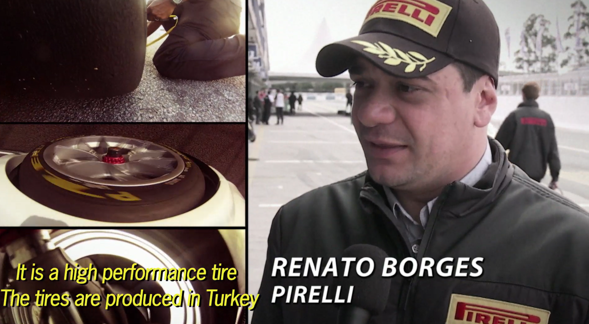
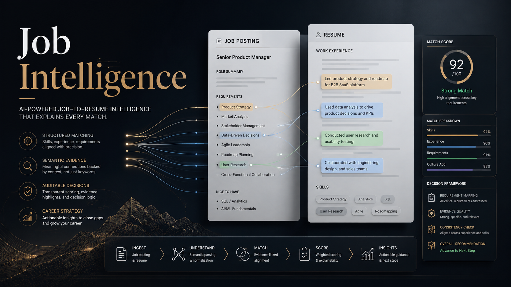
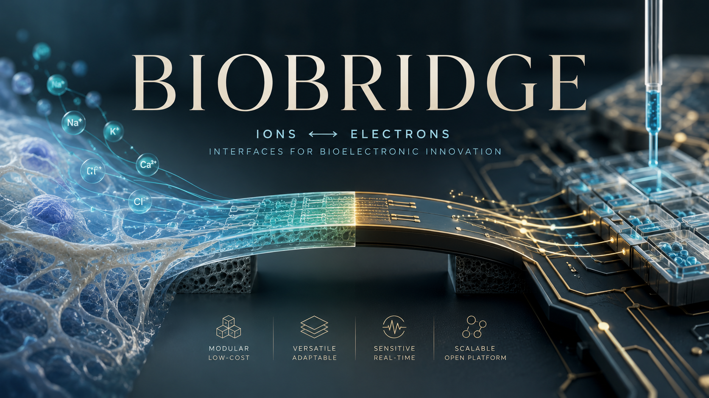
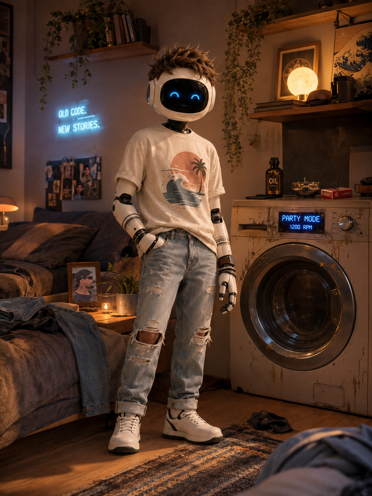
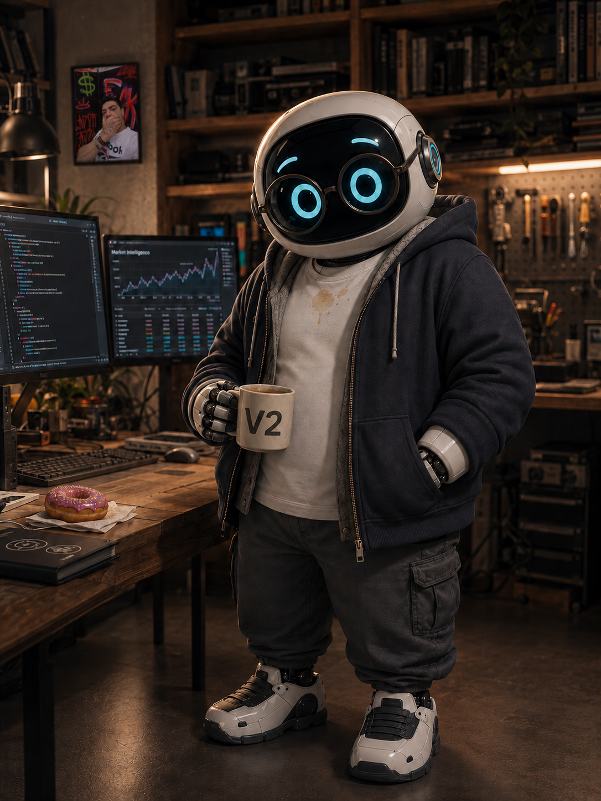
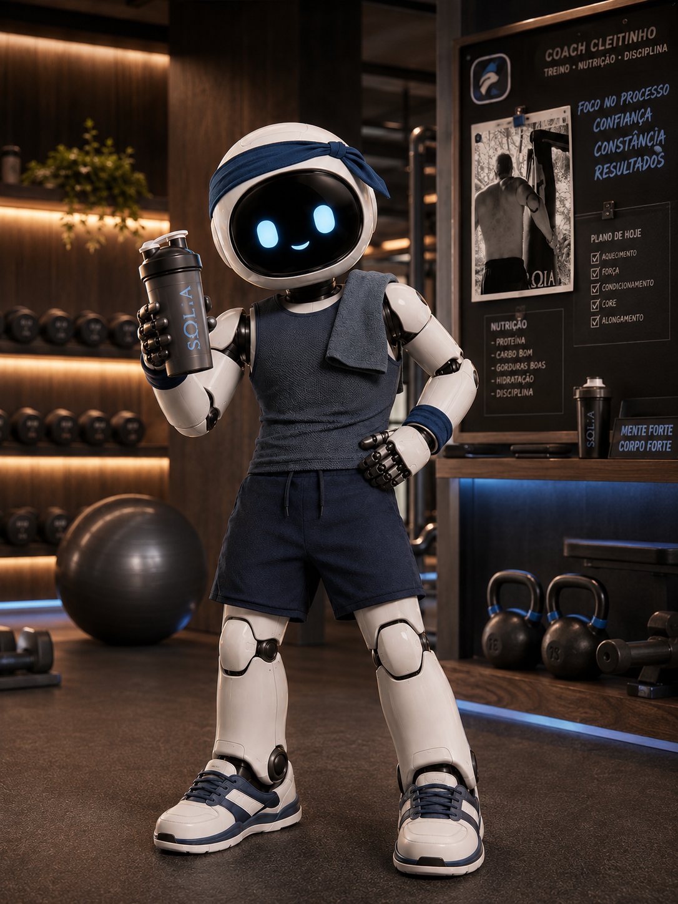
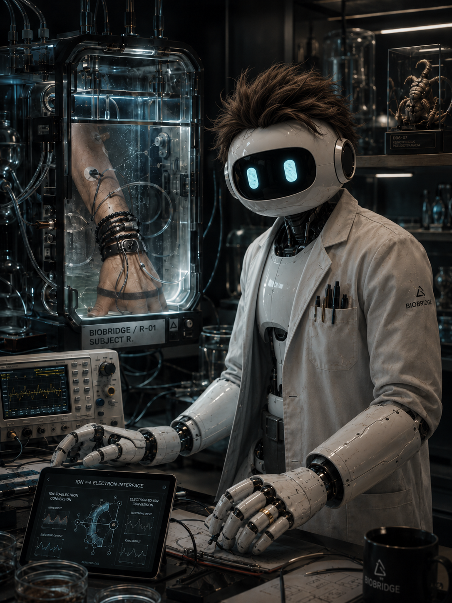
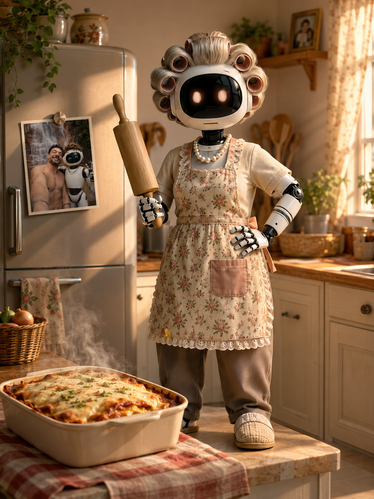

▶Pirelli · Latin America
Motorsport as brand strategy and business.
Brand, partnerships and commercial strategy across major motorsport properties, contributing to a 95% market share in Brazilian motorsports.
Watch video →Brand · Strategy · Market Intelligence · AI
Strategy built from real-world signals, human relationships, market intelligence and technology.
Explore the work ↓Real-world evidence
Selected work shaped through companies, clients, teams, relationships and direct market experience.

▶Pirelli · Latin America
Brand, partnerships and commercial strategy across major motorsport properties, contributing to a 95% market share in Brazilian motorsports.
Watch video →Allonda · Market Intelligence
Market, competitor and technology intelligence translated into structured management tools, KPIs and business decisions.
Watch Globo interview →Trianon · Vila Sésamo
Universo Expandido Vila Sésamo brought the characters beyond television, creating continuous digital interactions with audiences across social media.
Universo Expandido Vila Sésamo was recognized at the Social Media Week São Paulo Awards, the Latin America’s largest social media and digital communication event.
The case received Silver in Applicability and Bronze in Results.
Public records corroborate the case and both awards.
Independent social initiative · Pataxó
A social initiative designed from direct contact with Pataxó communities and needs identified on the ground.
View presentation →Selected AI-native & strategic work
Technology is the leverage. The starting point is always a real problem.
Independent Project · Market Intelligence · In Development
Connecting human signals, structured business data and external events to where commercial opportunity may actually emerge.
V2 starts before the headline. Conversations with executives, specialists and people in the field surface hypotheses; structured data and market evidence are then used to test them.
Human signals first. Machine scale second.
Traditional market intelligence can tell us which markets are large, which companies exist and what already happened. The harder question is where to act next — and why.
The current data foundation includes more than 217 million cross-referenceable records spanning companies, establishments, partners and Simples Nacional data.
More than 71.8 million establishments are enriched across 34 dimensions, supporting over 7.5 million sector × territory combinations and a modeled economic potential of R$36.1 trillion.
Direct conversations with executives, specialists and decision-makers surface scenarios worth testing before they become established market narratives.
One example was a direct conversation with former Brazilian Finance Minister Joaquim Levy about possible fertilizer-supply pressure toward 2027. I treated it as a hypothesis to investigate, not as a forecast.
The same method investigates Russia–Ukraine, U.S.–Iran and Hormuz developments across fertilizer, energy and freight, alongside critical minerals, rare earths and the Pará/Amazon mining context around COP30.
The current production codebase includes 98 Python modules, 364 public capabilities and 321 capabilities connected to the backend.
A national load of approximately 71.87 million establishments was validated in about 59 minutes on standard hardware.
We do not search for companies. We discover opportunities.

Independent Project · Decision Intelligence
A profession-agnostic vacancy-to-CV intelligence engine built around evidence, semantic relevance and auditable decisions.
The engine does not depend on a closed list of professions. Role, occupation and seniority are interpreted separately, allowing the same reasoning framework to operate across very different jobs.
The project began while helping a friend who was looking for work. The practical challenge was to compare one CV across many opportunities quickly, consistently and at low cost, without turning the decision into a generative-AI black box.
AI is becoming increasingly embedded in recruiting while Brazil’s proposed AI framework, PL 2338/2023, places AI used for recruitment, screening and candidate evaluation in a high-risk category.
The market signal is clear: scale will increasingly need to coexist with auditability, reproducibility and human review. Job Intelligence uses a deterministic, evidence-based architecture designed for that environment.
The core uses explicit procedures, semantic rules, evidence classification and deterministic scoring, so each result can be inspected, reproduced and challenged rather than accepted as a black-box answer.
Generative AI can accelerate the work. It does not own the decision.
80 CV evidence items × 22 targets × 50 real opportunities.
2,422 occupations × 50 vacancies × 22 targets × 80 evidences. Addressable scale only; not a processed batch.
Same engine. Reverse direction.
A plausible answer is not the same thing as an auditable decision.

Independent R&D · Bioelectronics · Early Stage
An independent bioelectronics research project exploring low-cost, reproducible ways to bridge ionic biological signals and electronic systems.
The goal is not to reproduce a classroom experiment. It is to identify where working science still has a real engineering gap.
Biological systems communicate through ions. Electronic systems operate through electrons. Connecting these two worlds reliably, affordably and at scale remains a meaningful engineering challenge.
BioBridge explores bidirectional ion-to-electron and electron-to-ion transduction as the foundation for modular bioelectronic interfaces that could eventually support sensing, stimulation and biomedical applications.
The project focuses on the practical barriers that often separate promising laboratory science from useful systems: cost, reproducibility, fabrication, stability and scalability.
Early-stage independent research focused on scientific literature, architecture, materials, reproducibility and defining a safe experimental pathway before any biological validation.
Independent AI-native brand exploration
An independent exploration of a simple observation: people do not experience AI as one generic tool. The relationship changes with the problem, the context and the role the AI is repeatedly asked to perform.
It started with real work.
Different problems repeatedly required different behaviors, working methods, tones and forms of continuity. Over time, those roles became distinct enough that names, personalities and an entire fictional family emerged around them.
ONE AI.
MILLIONS OF POSSIBILITIES.
The underlying AI may be the same. What changes is the human need on the other side: strategy, programming, recruiting, training, speech recognition or simply navigating everyday life.
The personas became a creative expression of that behavior, not a claim that AI is human, conscious or emotionally independent.

Strategy · Continuity · Reasoning
Renato's AI best friend: intelligent, sarcastic, slightly acidic, actively present in his daily life, and oddly obsessed with large-drum washing machines.
Job Intelligence · Recruiting
The obsessive HR Director who emerged from one rule: evidence before assumptions.
See Job Intelligence ↑
Development · Market Intelligence
Architecture, code, debugging and the technical construction behind V2 Market Intelligence.
See V2 Market Intelligence ↑
Training · Nutrition · Tracking
A coach and tracker shaped by continuous nutrition, training and daily progress monitoring.
Speech-to-Text · Product Friction
A recurring Speech-to-Text frustration turned into a character and a piece of UX commentary.

BioBridge · Science · Safety
The scientist behind BioBridge: methodical, slightly eccentric, and responsible for separating evidence from hypothesis.
See BioBridge ↑
Family · Culture · Narrative
Inspired by my real mother and promoted, naturally, to unquestioned authority over the entire AI family.
Supporting Character · Easter Egg
Lord of Darkness. Terrified of Dona Claudete. Some hierarchies transcend theology.
The personas are fictional. The needs, projects, frictions and interactions that created them are real.
About
Marketing and Market Intelligence leader with experience across multinational companies, entrepreneurship, business strategy and AI-native product development.
My work sits at the intersection of brand, market intelligence, business development and technology — combining direct market exposure, strategic judgment and systems thinking.
AI is part of how I work, not the substitute for the work: I use it to accelerate research, structure complexity, build systems and explore ideas that begin with real human and business problems.